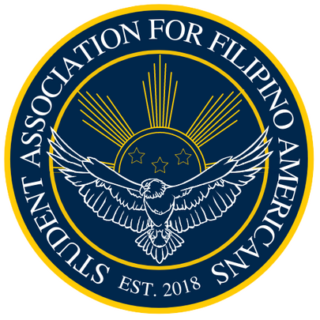

Student Association for Filipino Americans at University of Michigan-Dearborn

Founded in 2018, the Student Association for Filipino Americans (SAFA) strives to cultivate the Filipino
culture within the UM-Dearborn community through workshops, conferences, discussions, volunteering, and
social events centered around the Filipino American experience. Being of Filipino descent is not a requisite
for membership; any student or faculty member interested in learning more about the culture is welcome to join
at any time.
The University of Michigan-Dearborn sits on the territory of the Three Fires Confederacy of First Nations, comprised
of the Ojibwe, the Odawa, and the Potawatomi.
SAFA's E-Board 2025-2026
Co-Presidents: Anna Arao & Tanith Llarena
Treasurer: ya boi John Baron
Events Coordinator (Internal): Isabella Reale
Communications Chair (External): Suho Park
Co-Cultural Chairs: Sigmund Harder & Aura Mackenzie Perales
Performance Chair: Natalie Kim
Media Chair: Alfonso Torcuator
Service & Advocacy Chair: Ty Senopole